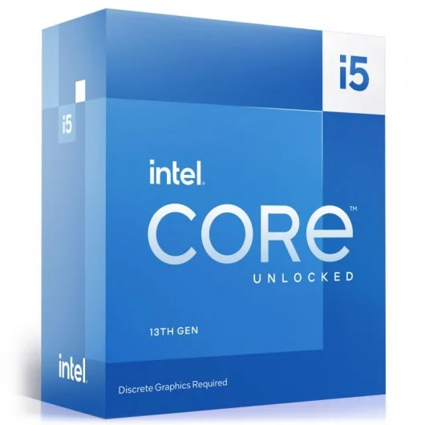
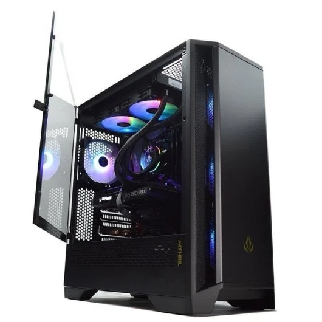
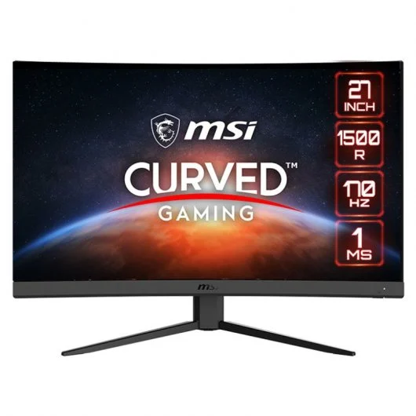

Placa base:ASUS PRIME Z790-P WIFI
La placa base es esa en la que se conectan todos los componentes internos del ordenador, desde el procesador hasta los discos duros, la memoria RAM o la tarjeta gráfica.

Caracteristicas
- Marca y socket de procesador compatible: Asus Intel® LGA 1700 compatibles con procesadores Intel® de 12.ª y 13.ª Gen
- Tipo de memoria RAM y capacidad máxima: DDR5/ 128GB
- Tipo de almacenamiento compatible: 3 x M.2 slots and 4 x SATA
- Formato de la placa base (tamaño): ATX Form Factor 30.5 cm x 23.4 cm
Precio
168€ PcComponentes
Procesador: Intel Core i5-13600KF 3.5 GHz Box
El procesador es el “cerebro” del ordenador. Es el componente encargado de la ejecución de las instrucciones de los programas.

Caracteristicas
- Marca: Intel
- Socket: LGA 1700
- Gráficos integrados (sí/no): No
- Núcleos: 14
- Frecuencia base: 3,5 GHz
Precio
329,99€ PcComponentes
Memoria RAM: Corsair Vengeance RGB DDR5 6000MHz PC5-48000 32GB 2x16GB CL36 Negra
La memoria de acceso aleatorio (RAM) es la memoria de la computadora que almacena la información que un programa necesita mientras se ejecuta.

Caracteristicas
- Tipo: CORSAIR
- Formato: DIMM
- Capacidad: 32G
Precio
109.99€ PcComponentes
Almacenamiento (disco): WD BLACK SN770 1TB SSD PCIe Gen4 NVMe
El almacenamiento de datos consiste en la conservación de información empleando una tecnología específicamente desarrollada para mantener los datos y que se encuentren accesibles siempre que sean necesarios.

Caracteristicas
- Capacidad: 1TB
- Tipo de disco: Disco Duro Sólido (SSD)
- Conector: Bluetooth
Precio
59.99€ PcComponentes
Torre (caja): Forgeon Arcanite ARGB Mesh Torre ATX Negra
La torre. Es una carcasa de metal o plástico, y quizá, la parte más importante del computador. En su interior se encuentran componentes que hacen que todas las otras partes cumplan su función. Es el equivalente al cerebro del computador.

Caracteristicas
- Formato (tamaño): 460mm x 231mm x 490mm
Precio
88,49€ PcComponentes
Fuente de alimentación: Forgeon Bolt PSU 750W 80+ Gold Full Modular Fuente de Alimentación
Se conoce como fuente de alimentación, o power supply en inglés, al dispositivo que se utiliza para convertir la corriente de la red eléctrica en una forma de energía adecuada para los componentes de un dispositivo o sistema electrónico.

Caracteristicas
- Potencia: 750 W
- Formato: ATX
- Eficiencia: 80+ GOLD
Precio
112.99€PcComponentes
Monitor: MSI Optix G27C4 E2 27" LED FullHD 170Hz FreeSync Premium Curva
Es un dispositivo electrónico de salida de la computadora en el que se muestran las imágenes y textos generados por medio de un adaptador gráfico o de video de esta.

Caracteristicas
- Resolución: 1920 x 1080 (Full HD)
- Pulgadas: 27
- Tipo de conexión con la placa: 1x DP (1.2a) 2xHDMI (1.4b)
Precio
158.99€ PcComponentes